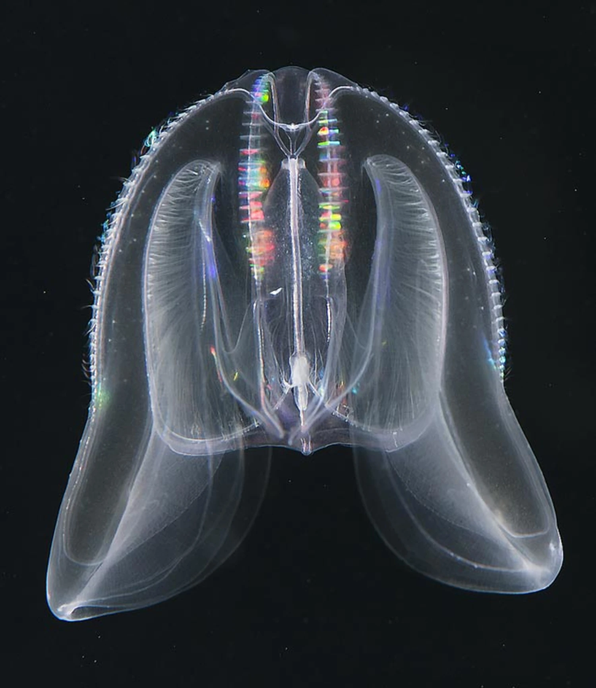

A dance in apnea
May 21, 2026
It was music I never heard — A. Walker
That night, your fingers stung me like a medusa,
dragged me under your halcyon umbrella,
kept me without rest in a vivid apnea.
You locked your tentacles around my waist,
sent electrical waves to a relentless pace,
kept our souls sync in a turbulent embrace.
Any remnants of this intimate dance from below?
With long stretching arms, we now dance in each other's shadows.
Without barely saying hello, we simply stick to the usual flow.
· · ·
Context & Notes
The poem introduces the image of the jellyfish, dear to both my dancing partner R. and me, while preserving the ambiguity between the mythological Medusa and the jellyfish itself, whose natural powers are described in deliberately scientific terms. It recalls the memory of a breathless salsa dance and reflects on the ways time can redirect the flow of a relationship.
Comments
Don't hesitate to share a thought below.